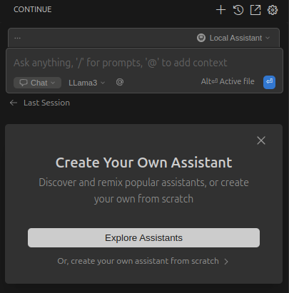

Este tutorial é uma contribuição da comunidade e não é suportado pela equipe Open Webui. Serve apenas como uma demonstração sobre como personalizar o Open Webui para o seu caso de uso específico. Quer contribuir? Confira oTutorial contribuindo
Integração da extensão continuação.dev vscode com webui aberto
Baixar extensão
Você pode baixar a extensão do vscode noVisual Studio Marketplaceou diretamente através doEXTENSION:MARKETPLACEdentro do vscode, pesquisandocontinue.
Depois de instalado, você pode acessar o aplicativo através docontinueguia na barra lateral do vscode.
Ícone de barra lateral do vscode:

Configurar
Clique no seletor de assistente à direita da entrada principal de bate -papo. Então pairouLocal Assistante clique no ícone Configurações (⚙️).
Isso abrirá oconfig.yamlarquivo em seu editor. Aqui você pode alterar as configurações de seuLocal Assistant

Atualmente oollamaO provedor não suporta autenticação, portanto, não podemos usar esse provedor com o Open Webui.
No entanto, o Ollama e o Open Webui têm compatibilidade com o OpenAI API Spec. Leia mais sobre a especificação noPostagem do blog Ollama.
Ainda podemos configurar continue.dev para usar o provedor OpenAI, que nos permitirá usar o token de autenticação do Open Webui.
Exemplo de configuração
Abaixo, você encontra um exemplo de configuração para LLAMA3 como o modelo com uma configuração local de webui aberta.
nomeAssistente local
versão1.0.0
esquemav1
modelos
nomeLhama3
provedorOpenai
modeloMetaLhama38bInstruirQ4_K_M.GGUF
Env
uselegacyCompleTionsEndPoint falso
Apibasehttp// localhost3000/API
APIKEYYour_open_webui_api_key
papéis
bater papo
editar
contexto
provedorcódigo
provedordocumentos
provedorDif
provedorterminal
provedorproblemas
provedorpasta
provedorCodeBase
Configurações diversas de configuração
Esses valores são necessários pela extensão para funcionar corretamente. Encontre mais informações noGuia oficial de configuração
nomeAssistente local
versão1.0.0
esquemav1
A seção de contexto fornece informações adicionais aos modelos. Encontre mais informações noGuia oficial de configuraçãoe noGuia do provedor de contexto
contexto
provedorcódigo
provedordocumentos
provedorDif
provedorterminal
provedorproblemas
provedorpasta
provedorCodeBase
Modelos
A seção de modelos é onde você especifica todos os modelos que deseja adicionar. Encontre mais informações noGuia de modelos oficiais
modelos
Nome
Define o nome do modelo que você deseja usar. Isso será exibido na entrada de bate -papo da extensão.
nomeLhama3
Provedor
Especifica o método usado para se comunicar com a API, que no nosso caso é o terminal da API OpenAI fornecido pelo Open Webui.
provedorOpenai
Modelo
Este é o nome real do seu modelo no Open Webui. Navegar paraAdmin PanelSettingsModelse, em seguida, clique no seu LLM preferido.
Abaixo do nome dado pelo usuário, você encontrará o nome do modelo real.
modeloMetaLhama38bInstruirQ4_K_M.GGUF
Conclusão do Legacy endpoint
Esta configuração não é necessária para o webui aberto, embora mais informações estejam disponíveis noGuia original
Env
uselegacyCompleTionsEndPoint falso
Apibase
Esta é uma etapa crucial: você precisa direcionar as solicitações de extensão continuação.dev para a sua instância aberta da Webui.
Use um nome de domínio real se a instância estiver hospedada em algum lugar (por exemplo,https://example.com/api) ou sua configuração de localhost (por exemplohttp://localhost:3000/api).
Você pode encontrar mais informações sobre os URLs noGuia de terminais da API
Apibasehttp// localhost3000/API
Chave da API
Para autenticar com sua instância aberta do Webui, você precisará gerar uma chave de API. Siga as instruções emeste guiapara criá -lo.
APIKEYYour_open_webui_api_key
Papéis
As funções permitirão que seu modelo seja usado pela extensão para determinadas tarefas. Para o começo, você pode escolherchateedit.
Você pode encontrar mais informações sobre funções noGuia de funções oficiais
papéis
bater papo
editar
A configuração agora está concluída e você pode interagir com seu (s) modelo (s) através da entrada de bate -papo. Encontre mais informações sobre os recursos e o uso do plug -in de continuação.dev nodocumentação oficial